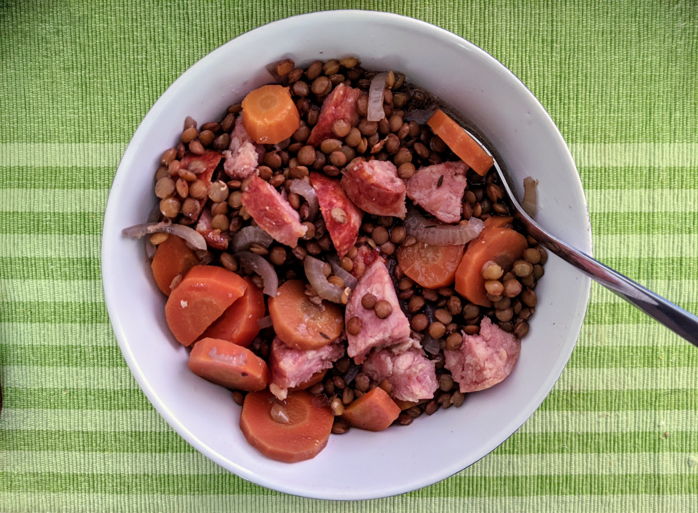

Lentilles-saucisses

Ici avec du saucisson de Fribourg et du saucisson vaudois.
Pour 4 personnes :
- 250g de lentilles vertes
- 3-4 carottes
- Un petit oignon
- Des saucisses (deux grosses saucisses fumées, ou quatre knacks, par exemple)
- Quatre clous de girofle
- Une feuille de laurier
- (Facultatif) Une branche de romarin
- Un litre d'eau
- Sel, poivre
- Éplucher l'oignon et planter les quatre clous de girofle dedans. Éplucher et couper les carottes en bouts fins.
- Tout mettre (sauf les saucisses) dans une casserole, faire cuire une heure à feu doux à partir des premiers bouillons. Ou bien, mettre tout dans une mijoteuse pendant minimum 4 heures.
- Ajouter les saucisses, et faire cuire une heure de plus (4 heures dans une mijoteuse). Servir chaud, en égouttant un peu quand on sert.
Remarque : On peut aussi mettre les saucisses au début, si on utilise une mijoteuse pendant la journée et qu'on a envie que tout soit prêt quand on revient. Dans ce cas, mieux vaut utiliser de la saucisse fumée : ça va parfumer la soupe, et la viande va être très friable en fin de cuisson.